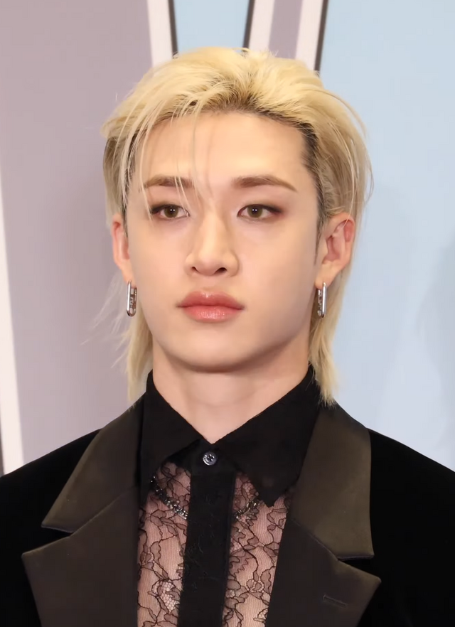

Name: Chirstopher Chahn Bhang AKA Bang Chan (3racha name:CB97).
Birthday: 3 October 1997
Age: 28 years old
SKZOO: WolfChan
Roles in Stray Kids: Leader, Main Producer, and all-rounder.
Racha's: 3RACHA, AussieRacha, and Red Lights-Racha.
Story: Bang Chan was born in Seoul,South Korea but moved to Sydney, Australia at young age. He joined JYPE in 2010 and was a trainee for 7 years. As the leader and main producer of Stray Kids he writes, composes, and arranges almost every Stray Kids song, unlike when company chooses the members, Bang Chan personally selected the other seven members of Stray Kids during his 7-year training period. His known for his nocturnal sleep schedule, He is notorious for barely sleeping, often spending 24+ hours in the studio to perfect a track.
Facts: Before Bang Chan joined JYPE he was he was a champion swimmer in Australia, which contributed to his athletic build and discipline. He has 2 siblings Hannah Bahng, and Lucas Bahng he also has a pat dog named Berry, a King Charles Spaniel. His nick names are Channie and kangaroo.